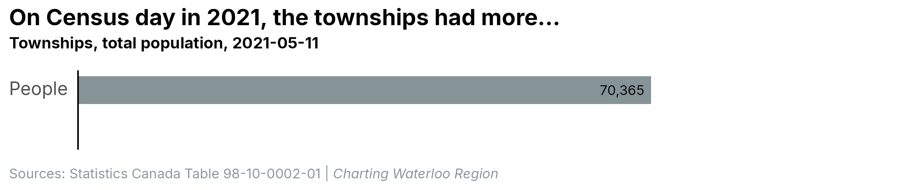
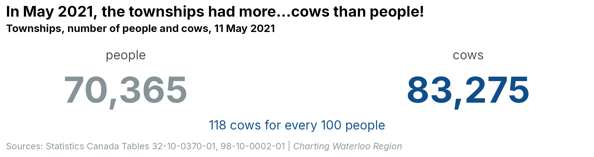

R version: R version 4.5.3 (2026-03-11 ucrt)
OS: Windows 11 x64 (build 26200)
Rendered: 2026-09-20
Quarto: 1.9.38
package version date source
arrow 25.0.1 2026-08-23 CRAN (R 4.5.3)
conflicted 1.2.0 2023-02-01 CRAN (R 4.2.3)
dplyr 1.2.1 2026-04-03 CRAN (R 4.5.2)
forcats 1.0.1 2025-09-25 CRAN (R 4.5.3)
ggplot2 4.0.3 2026-04-22 CRAN (R 4.5.3)
ggtext 0.2.0 2026-08-28 CRAN (R 4.5.3)
gt 1.3.0 2026-01-22 CRAN (R 4.5.3)
gtExtras 0.6.2 2026-01-17 CRAN (R 4.5.3)
here 1.0.2 2025-09-15 CRAN (R 4.5.3)
janitor 2.2.1 2024-12-22 CRAN (R 4.5.3)
lubridate 1.9.5 2026-02-04 CRAN (R 4.5.3)
patchwork 1.3.2 2025-08-25 CRAN (R 4.4.3)
purrr 1.2.2 2026-04-10 CRAN (R 4.5.2)
readr 2.2.0 2026-02-19 CRAN (R 4.5.3)
scales 1.4.0 2025-04-24 CRAN (R 4.5.3)
sf 1.1-2 2026-07-23 CRAN (R 4.5.3)
stringr 1.6.0 2025-11-04 CRAN (R 4.5.3)
tibble 3.3.1 2026-01-11 CRAN (R 4.5.2)
tidyr 1.3.2 2025-12-19 CRAN (R 4.5.3)
tidyverse 2.0.0 2023-02-22 CRAN (R 4.5.2)As a kid, one of my favourite family activities was “going for a drive.” That is literally what we called it. Mom or Dad would announce that we were “going for a drive” and the five of us would pile into the Montego and go for a drive. A drive never had a destination, unless we ended up in Hespeler, where we’d get ice cream cones at a convenience store on Cooper Street. Almost all of them meandered through one or more of the Region’s townships. I particularly liked it when Dad drove through the Paradise Lake area in Wellesley Township. I thought it was neat that we had a little cottage-y area so close to home. These drives gave me an early appreciation for the Region’s vastness and variety, and for the contrasts between its rock ‘n’ roll heart and its country soul. In CWR’s inaugural post, we’ll start exploring some of these contrasts and, in the process, answer the burning question: “What do the townships have more of, cows or people?”
An urban island in a sea of farmland
If you haven’t gone for many drives through the townships, you may have no idea how vast they are compared to the cities in the Region’s heart. On a map, they look like a giant jaw chomping the urban core they nearly surround. Collectively, the townships cover 1,056 square km, or 77% of the Region’s 1,370 square km. Even the smallest township, North Dumfries, is considerably larger than Kitchener, the biggest city.

More cows than people?!
You don’t have to drive through the townships to guess that they have fewer people than the cities, but do they have fewer people than cows? Before we answer that, let’s see how many more people live in the cities than in the townships.
![Horizontal bars of population, one per municipality, largest first, with the three cities in dark blue and the four townships in light blue, and each municipality's residents per square kilometre boxed in a column on the right. Kitchener 323,917 residents, 2,368 per square kilometre; Cambridge 165,354 residents, 1,463 per square kilometre; Waterloo 142,450 residents, 2,224 per square kilometre; Woolwich 31,382 residents, 96 per square kilometre; Wilmot 22,890 residents, 87 per square kilometre; North Dumfries 13,051 residents, 69 per square kilometre; Wellesley 12,413 residents, 45 per square kilometre.](figures/fig-sizes-phone.png)
The latest estimates from 2025 show that, with 323,917 residents, Kitchener has by far the highest population in the Region, slightly more than the other two cities combined. Together, the cities have 631,721 people, or 89% of the Region’s population of 711,457. So despite covering 77% of the Region’s territory, the townships are home to only 79,736 residents, or 11% of total population. With a combined density of only 75 residents per square km, they certainly have lots of room for cows!
By the way, cows did not figure in this post when I conceived it. Not until I saw the density data did I jokingly add the “More cows than people?!” heading to this section. And even after that, it took a while before I thought, I wonder if there actually is any data on how many cows there are in the townships. Serendipitously, I found that not only is there a Census of Population, there’s also a Census of Agriculture, which most non-farmers have probably never heard of. And when I dug into the most recent data from 2021, I was excited to learn that I could answer the question, “What do the townships have more of, cows or people?”
(In case there are any cattle farmers reading, I do know that cows are a specific type of cattle, along with heifers, steers, bulls, and calves. But to this lifelong city dweller, they are all cows, so when I say cows, I mean cattle.)
The population estimates above are for 2025, but the cow data is from 2021, so for a fair comparison, we’ll use the 2021 census populations as well. On census day in 2021, just over 70,000 people lived in the townships. How many cows lived in them on that day? Click the other tab to find out.


And there we have it: more cows than people lived in the townships on census day in 2021. What I thought was a joke turns out to be true!
What have we learned?
In CWR’s debut post, we learned that my family thought it was fun to jump in our gas-guzzling Mercury and aimlessly roam the rural roads through the Region’s rolling hills. We learned there were lots of roads and hills to roam because the townships cover 1,056 square km, over three-quarters of the Region’s 1,370 square km, while holding only 79,736 people, a ninth of its 711,457 residents. And last, we learned that with so much space and so few residents, the townships were home to more cows than people in 2021. In future posts, we’ll explore more differences between the cities and their country cousins. And if CWR is still active a year or so from now, when this year’s census data is released, we’ll revisit this post and see if cows still outnumber people in cattle country.
Data sources and reliability
Sources
File in data-raw/ |
What it is | Source (link) | Licence | Sample | Accessed |
|---|---|---|---|---|---|
table_17100155.csv |
Table 17-10-0155-01, population estimates on 1 July by census subdivision, 2021 boundaries | Statistics Canada | Statistics Canada Open Licence | None (population estimates) | 2026-09-14 |
csd_boundaries/ |
2021 census subdivision cartographic boundary file (lcsd000b21a_e), the municipal polygons |
Statistics Canada | Statistics Canada Open Licence | None (boundaries) | 2026-09-14 |
table_32100370.csv |
Table 32-10-0370-01, cattle inventory on farms, 2021 Census of Agriculture, cut to Waterloo Region | Statistics Canada | Statistics Canada Open Licence | None (Census of Agriculture, every farm) | 2026-09-18 |
table_98100002.csv |
Table 98-10-0002-01, population and dwelling counts, 2021 census, cut to Waterloo Region | Statistics Canada | Statistics Canada Open Licence | None (census short form, full count) | 2026-09-18 |
Reliability
| Items of note |
|---|
| Cattle counts, 2021: Statistics Canada grades the quality of each township’s cattle count separately, on a scale from A (excellent) to E (use with caution): Wellesley - excellent (A), Woolwich - very good (B), Wilmot - good (C) and North Dumfries - acceptable (D). (table 32-10-0370-01) |
| Township population, 2021: the population is the 2021 census count, which is not adjusted for people the census missed. (table 98-10-0002-01) |
NoteReproducibility and data download
Reproduce the post: get the code and data for this post from posts/welcome/ on GitHub.
Download the data: welcome-data-v1.zip holds every table used in this post as CSV and Parquet files, an Excel workbook, a data dictionary, and a README with sources and licences. The same dictionary is in the post’s README.
Reusing this post
The text and charts in this post are free to copy, share, or republish, including in the news, as long as you credit Charting Waterloo Region and link to the post (Creative Commons CC BY 4.0). The code is MIT licensed; data stays under the licence of its original source, listed above. Material quoted from other sources stays under its owner's terms.(View License)